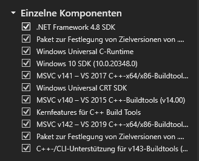
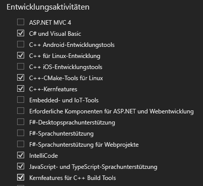
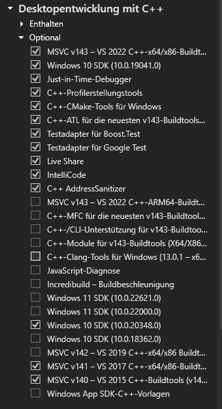

The zip folder contains the following files and subfolders with the following purposes:
Task_X
├── assets
│ ├── shaders
│ │ ├── texture.frag
│ │ └── texture.vert
│ ├── textures
│ └── settings.ini
├── ECG_Solution
│ ├── cmake
│ │ ├── GlobalSettings.cmake
│ │ ├── LinuxDependencies.cmake
│ │ └── SourcesList.cmake
│ ├── src
│ │ └── The actual sources where you implement your solutions...
│ ├── CMakeLists.txt
│ └── CMakePresets.json
├── external
│ ├── include
│ ├── include_gli
│ └── lib
├── install_dependencies.sh
├── README.html
├── SubmissionTool.exe
├── version.txt
└── bin*
| Folder/File | Purpose |
|---|---|
Task_X |
The root of the assignment folder. Do NOT open this folder in your IDE! |
assets |
Contains the textures and shaders. The shaders might be relevant for your tasks and you might have to implement code here |
ECG_Solution |
Contains the project! Open THIS folder in your IDE and not the Task_X folder. |
ECG_Solution/CMakeLists.txt |
This is the project's root configuration which can be loaded by Visual Studio, CLion or any other IDE of your choice (but beware we only tested it using the former two!) This can roughly be compared to a .vcxproj or .sln file |
ECG_Solution/CMakePresets.json |
This contains machine-dependent configuration presets as well as compiler-selection and configuration types (i.e. Debug vs. Release). You have to use this configuration! How is explained in detail below. |
ECG_Solution/cmake |
Contains additional helper files for CMake but also the sources list, meaning if you add new .cpp or .h files to your project, **you will also have to add them to SourcesList.cmake! |
ECG_Solution/src |
Contains the C sources of the project. Besides the shaders, this is the only other place where your implementations will go. |
external |
Contains bundled library binaries and include directories of additional dependencies. You probably need not care about this folder. |
install_dependencies.sh |
Only for Linux users: You can run this script on your computer (under your own responsibility!) to automatically install all required packages, assuming your system runs on Ubuntu or a similar distribution with the apt package manager: Please carefully assess the script before running it and verify that you really want the commands to be executed. BEWARE that the script modifies your installed graphics drivers by installing alternative, proprietary ones! (This is needed on Linux systems in order to compile and run Vulkan applications) After that, you should have everything you need to be able to compile and run the project on Linux. |
SubmissionTool.exe |
This tool collects your code and creates a zip file for upload. Might be deprecated |
bin |
This folder will be generated the first time the project is compiled and the executables will land here. |
Note that we only tested this using Visual Studio Community 2022 (64-bit), Version 17.2.6 on Windows 10 with a CMake 3.24 installation!
For both, Visual Studio AND CLion, you need to install Visual Studio with the following packages:



Open a local folder, this setting is for CMake projects.Task_X/ECG_Solution folder and select ECG_Solution to open it. The contained CMakeLists.txt will automatically be used by Visual Studio to load the project and the CMake configuration process is started immediately.1> CMake generation finished.ECG_Solution.exe:Debug and Release mode, you have to find the right drop-down menu which provides this setting. Only one of the 3 Debug dropdown menus is the correct one:Task_X/ECG_Solution, the same way as described in the Visual Studio steps.CMakePresets.json and prompt you with a popup window:
First, delete the Default preset, then activate only the two presets debug and release so that your configuration looks like this and press Apply:Build options field is filled and not the other one.View -> Tool Windows -> CMake.
A successful configuration should look like this:Debug or Release in the dropdown menu of your CLion Run/Debug configurations on the top and press the green triangle to build and run the app.
Note, that for Task_0, the program will crash on purpose because your implementation is needed before a visible window can be loaded.Note that we only tested this using CLion 2022.2 with its bundled CMake (version 3.23.2) on Ubuntu 22.04
Carefully follow these steps in order to setup your environment to be able to build and run the assignments (steps 1 to 3 are only needed once):
install_dependencies.sh script and verify that you really are OK with the changes in this script.
If not, you might need to switch to a Windows computer, or find alternative solutions which fit your requirements.install_dependencies.sh in a terminal. This might take a while.vulkaninfo manually to verify that Vulkan was installed successfully (which does not mean that every dependency is also installed correctly, but the script will fail immediately if errors occur).ECG_Solution with your IDE. We tested this step with CLion successfully, thus CLion is recommended. We cannot provide support for any other IDE on Linux.CMakePresets.json and prompt you with a popup window:
First, delete the Default preset, then activate only the two presets linux-debug and linux-release so that your configuration looks like this and press Apply:Build options field is filled and not the other one:View -> Tool Windows -> CMake.
A successful configuration should look like this:Debug or Release in the dropdown menu of your CLion Run/Debug configurations on the top and press the green triangle to build and run the app.
Note, that for Task_0, the program will crash on purpose because your implementation is needed before a visible window can be loaded../ECG_Solution in a terminal or double clicking the file does not work, please try chmod 755 ./ECG_Solution beforehand and then try one of the first two actions again.Extensions -> Manage Extensions -> Installed menu.
Then restart Visual Studio.